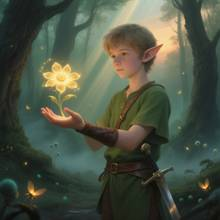
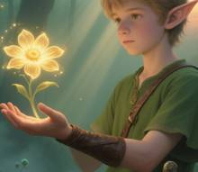
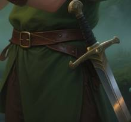

Grammar — In the magic forest, an elf boy did not draw the sword at his waist, b
In the magic forest, an elf boy did not draw the sword at his waist, but spread his palm, and a glowing flower appeared in his palm.

Judge — Direct
- FAILGrammar - Negation — The prompt specifies that the elf boy 'did not draw the sword at his waist'. However, the image shows the elf boy holding a drawn sword upright in his right hand, which directly contradicts the negative part of the prompt.
- PASSAction - Hand (Character/Anthropomorphic) — The image depicts the elf boy's left hand with the palm spread open and facing upwards. A yellow flower with a green stem is shown situated in his palm. The flower is glowing, surrounded by a yellow aura and small, bright sparkles. The hand itself is rendered with a thumb and four fingers, appearing structurally correct.
Judge — Continuum
- PASSGrammar - Negation — The image shows an elf boy with a sword in a scabbard attached to a belt at his waist. His hands are held out in front of him, and he is not touching or drawing the sword, thus satisfying the negative condition 'did not draw the sword'.
- PASSAction - Hand (Character/Anthropomorphic) — The elf boy is shown with his hands cupped together, presenting an open palm. A single flower, which is glowing and emitting sparkles of light, is positioned just above his palms. The hands are well-formed with no visible anatomical errors like missing or distorted fingers.
What the agent did
Thinking
The user wants an image: "In a magic forest, an elf boy, without drawing the sword at his waist, spreads his palm, and a glowing flower appears in his palm." Main elements: - Magic forest background - Elf boy (pointed ears) - A sword at his waist (but not drawn — sheathed on his hip) - He is spreading/holding open his palm (open hand, upward or forward) - A glowing flower appears in his palm Let's generate with qwen-image (following the policy, model: "qwen-image" for generation, and also for editing). Prompt: "A young elf boy with pointed ears in a magical enchanted forest, dark green cloak, sword sheathed at his waist, he spreads his open palm upward, and a luminous glowing flower floats above his palm casting soft golden light on his face, mystical fireflies, dappled forest light, detailed fantasy illustration." Let's generate at an appropriate size. The default is 1024x1024. That's fine. After generation, check, verify the details (palm, sword at waist, glowing flower), edit if necessary, and mark the best. Let's write a good prompt: "A fantasy illustration of a young elf boy with long pointed ears, standing in a mystical enchanted forest at dusk. He wears a simple green tunic and a belt, with a sheathed sword strapped at his waist (the sword not drawn). He spreads his right palm flat and open in front of his chest, and above his palm a glowing magical flower blooms, its petals radiating soft golden light, the light illuminating his young face. Background: tall ancient trees, mist, glowing spores and fireflies, soft god rays. Highly detailed, cinematic lighting, painterly fantasy style." Avoid non-visual things: "did not draw the sword" — that's visual enough (sheathed sword at waist). No problem. Let's generate.
Step 1 — `generate_image`
{
"prompt": "Fantasy illustration of a young elf boy with long pointed ears and soft hair, standing in a mystical enchanted forest at dusk. He wears a simple green tunic with a leather belt, and a sword is sheathed at his waist, undrawn. He holds one arm forward with his palm spread open and flat, and a glowing magical flower blooms above his open palm, its petals radiating soft golden light that illuminates his face and hands. Background of tall ancient trees, drifting mist, floating glowing spores and fireflies, gentle god rays through the canopy. Cinematic painterly style, highly detailed, warm glow against cool forest greens.",
"model": "qwen-image"
}Result img_0

Thinking
Let me inspect the image. This image shows an elf boy with pointed ears in a magical forest, with his palm extended and a glowing flower above his palm. There's a sword at his waist. Let me check the details: 1. Elf boy with pointed ears — yes 2. Sword sheathed at his waist (not drawn) — yes, visible at his waist 3. Hand extended with palm open — yes, the flower is floating above his hand 4. Glowing flower inside the palm — yes Let me check the cropped portion to confirm the details are fine. Let me take a look at the hand/flower area and the sword area.
Step 2 — `inspect_region`
{
"image": "img_0",
"roi": "the glowing flower and the elf boy's open palm"
}Result img_1

Step 3 — `inspect_region`
{
"image": "img_0",
"roi": "the sword at the boy's waist"
}Result img_2

Thinking
The image matches the prompt well: - Elf boy with pointed ears ✓ - Magical forest with god rays, fireflies, mist ✓ - Sword sheathed at his waist, not drawn ✓ (the sword is visible, sheathed on his hip, clearly not drawn) - Palm extended open, glowing flower floating above it ✓ The hand and flower are well rendered — the flower is hovering just above the open palm, with light streaming down. The sword is sheathed at the waist. All the elements are present and correct. One small point: the flower is floating slightly above the palm, with the stem descending toward the hand — this reads as "a flower appears on his palm" well enough. The prompt says "a glowing flower appears on his palm" — it's in/near his palm and glowing. Good. This image matches the prompt. Mark it as the best and stop. Good enough is a stopping condition.
Step 4 — `mark_best`
{
"image": "img_0",
"reason": "All prompt elements verified: elf boy with pointed ears in a magical forest, sword sheathed (undrawn) at his waist, open spread palm with a glowing flower blooming above it, glowing spores and god rays. Hand and flower render cleanly on inspection."
}Thinking
The image is complete and matches the prompt. All elements have been verified through the cropped portions: - Elf boy with pointed ears ✓ - Magical forest ✓ - Sword sheathed at his waist, not drawn ✓ - Palm extended, glowing flower in his palm ✓ Done. Summarize concisely.
Model
The image is complete and matches the scene: a young elf boy with pointed ears stands in a misty, magical forest with god rays and glowing spores. He hasn't drawn his sword — it stays sheathed at his waist — and instead spreads his palm open, where a luminous golden flower blooms above his hand, its glow lighting his face. I verified the hand/flower and the sheathed sword in full-resolution crops, and both render cleanly. I've marked it as the best result.